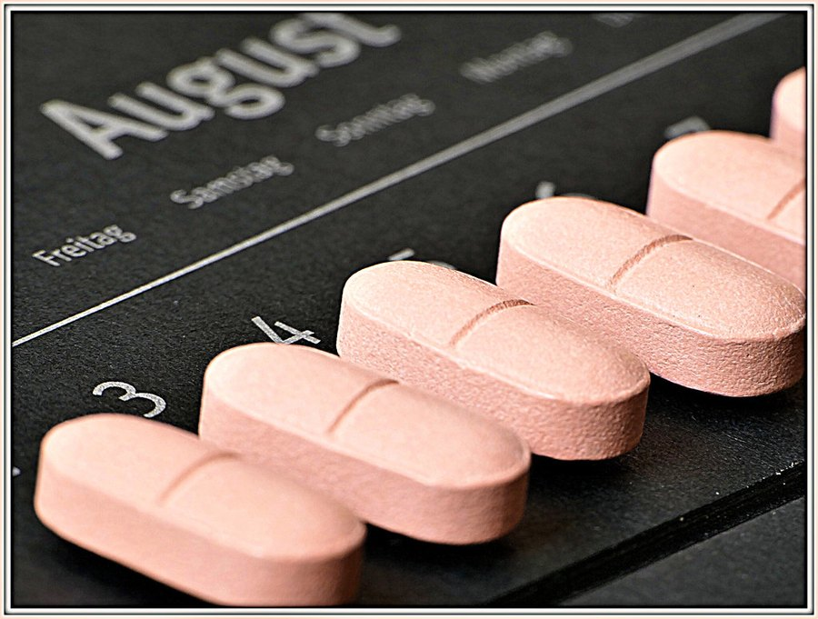

Memopezil Ingredients: What Each of the 5 Actually Does
A short ingredient list is easier to judge than a long one. Here's what the research says about each of the five, and where the label goes quiet.

Photo: Rolf Dietrich Brecher / CC BY 2.0
Key takeaways
- Memopezil uses five ingredients: branched-chain amino acids, bacopa monnieri, rhodiola rosea, L-theanine and panax ginseng.
- Bacopa is the one with the deepest memory evidence, and it's also the slowest. Trials run 12 weeks before recall scores move.
- L-theanine is the fastest-acting of the five. It's the only one you might notice the same day.
- The sales page doesn't publish the per-ingredient amounts. That matters more than any single ingredient, and we explain why below.
- Evidence for an ingredient is not evidence for a product. No published trial has tested this finished formula.
Most memory supplements fail the first test: you can't tell what's in them. Twenty-eight ingredients, a proprietary blend, and no amounts. Memopezil takes the opposite approach with a short list of five. That makes it possible to actually evaluate, which is what this page does.
The five are branched-chain amino acids, bacopa monnieri extract, rhodiola rosea extract, L-theanine, and panax ginseng extract. Each one has a real research base. None of them is exotic. Below we go through them one at a time, what the studies support, what they don't, and how quickly you'd expect to notice anything.
One thing to settle up front. Evidence that an ingredient works at a given dose is not evidence that a particular product works. No published clinical trial has tested Memopezil as a finished formula. That's normal for supplements, and it's true of nearly every product on the shelf, but it should shape what you expect.
COMPLEX
The memory formula we rate highest in 2026
Five studied botanicals and amino acids in one label, bacopa and rhodiola among them, backed by a 60-day money-back guarantee.
See Today's Price →What is in Memopezil?
The formula is five components in a capsule, two capsules per serving. A bottle holds 60 capsules, which works out to 30 days at the labelled serving.
| Ingredient | What it's used for | How fast it acts | Strength of the memory evidence |
|---|---|---|---|
| Bacopa monnieri extract | Delayed recall, learning | Slow, 8–12 weeks | Strongest of the five |
| Rhodiola rosea extract | Mental fatigue, stress load | Days to weeks | Moderate, trials are small |
| L-theanine | Calm alertness, attention | Same day, 30–60 min | Moderate, mostly acute attention |
| Panax ginseng extract | Mental fatigue, processing | Weeks | Mixed |
| Branched-chain amino acids | Central fatigue | Unclear | Thin in healthy adults |
Bacopa monnieri: the slow one that carries the formula
Bacopa is the ingredient doing most of the heavy lifting here, and it's the one with the best claim to a memory effect. It's a creeping herb used in Ayurvedic practice for a long time, and it's been through a reasonable number of randomised trials in adults.
What those trials tend to find is a modest improvement in delayed word recall. You hear a list, you're tested later, and the bacopa groups remember slightly more items than placebo. The effect is real but small. Nobody in these studies turned into a different person.
Two details matter far more than most marketing admits. The first is standardisation. Trials generally use an extract standardised to around 50% bacosides, the active compounds, not raw powdered leaf. The second is time. Bacopa is not acute. The studies that found effects ran 8 to 12 weeks, and the shorter ones mostly found nothing.
So if you take a bacopa product for ten days and conclude it doesn't work, you haven't really tested it. You've stopped before the point where the research says anything happens.
Rhodiola rosea: for fatigue more than for memory
Rhodiola is an adaptogen, a loose category for plants that supposedly help the body handle stress. That framing is vague enough to be worth ignoring. The concrete claim is narrower: rhodiola has been studied for mental fatigue, particularly the kind that builds up during long cognitive work.
Some of those trials are encouraging. Physicians on night duty, students during exams, people doing sustained attention tasks. They report less fatigue and slightly better performance late in a task. But the trials are small, several are old, and the field has a publication-quality problem.
Rhodiola also has a specific supply-chain issue. It's a commonly adulterated botanical. Analyses have repeatedly found products sold as rhodiola rosea that contain other rhodiola species, or very little of the marker compounds at all. Standardisation to roughly 3% rosavins and 1% salidroside is the usual benchmark.
Note what rhodiola is not doing in this formula. It isn't a memory ingredient. It's there for the fatigue side, which is a legitimate part of why people feel foggy, but it's a different mechanism from bacopa's.
L-theanine: the only one you might feel today
L-theanine is an amino acid found in tea leaves. It's the reason a cup of green tea feels different from an equivalent dose of coffee. Typical study doses land between 100 and 200mg, and unlike bacopa it acts within an hour.
The research here is mostly about attention and subjective calm rather than memory. L-theanine on its own produces a mild settling effect without sedation. Paired with caffeine, which is the better-studied combination, it shows up in attention-switching tasks and self-reported alertness.
In a formula with no caffeine in it, theanine is doing something more modest. It takes the edge off. For someone whose concentration problem is really an anxiety problem, that's not nothing. It's also the ingredient most likely to give you an early impression that the product is doing something, which is worth knowing when you judge your first week.
Panax ginseng: genuinely mixed
Panax ginseng is the one where honesty costs the most. It has a long traditional record and a large modern literature, and the modern literature does not agree with itself.
Some trials report faster processing and less mental fatigue. Others find nothing. Systematic reviews looking at ginseng for cognition in healthy adults have generally concluded that the evidence isn't strong enough to support a firm recommendation. That's not the same as saying it does nothing. It means the studies are too varied in dose, extract, duration and population to add up cleanly.
Ginseng is also the ingredient with the most interaction potential in this formula. It can affect blood sugar, which matters for anyone on diabetes medication, and it has documented interactions with warfarin. It's stimulating enough that taking it late can disturb sleep, and poor sleep will undo any memory benefit you were hoping for.
Branched-chain amino acids: the unexpected one
BCAAs are leucine, isoleucine and valine. Most people meet them in a gym context, which is why they look out of place on a memory label.
There is a theory behind it. BCAAs compete with tryptophan for the same transporter into the brain. Less tryptophan crossing means less serotonin production, and one hypothesis holds that rising brain serotonin during long effort contributes to the sensation of central fatigue. Push BCAAs up, the theory goes, and you blunt that.
That's a real mechanism with real research behind it. What's thin is the step from mechanism to measurable cognitive benefit in healthy adults going about their day. Most of the interesting BCAA work sits in endurance exercise and in traumatic brain injury, neither of which describes the person buying a memory supplement. Treat this ingredient as the most speculative of the five.
The number the label doesn't give you
Here's the part that matters more than any individual ingredient. The sales page names the five components but doesn't publish how many milligrams of each you get per serving.
Without that, you can't check the one thing that decides whether a formula is worth buying: whether each ingredient is present at the amount that produced results in the studies. Bacopa's evidence sits around 300mg of a standardised extract. If a capsule contains 40mg, the ingredient is on the label for marketing rather than for effect. That's true of every supplement, not just this one, and it's the single most common way a good-looking ingredient list turns out to be hollow.
We're not asserting that's the case here. We're saying you can't tell from the public page, and neither can we. If you're considering buying, the supplement facts panel on the physical bottle is the document to read, and it's fair to ask for a photo of it before ordering.
What to realistically expect, and when
Because the five ingredients act on different timescales, a sensible expectation has a shape to it.
- Week 1. If you notice anything, it's most likely the theanine. Slightly steadier, slightly less scattered. Mild.
- Weeks 2 to 4. Rhodiola and ginseng, if they do anything for you, act on fatigue in this window. This is about stamina through the afternoon, not recall.
- Weeks 8 to 12. This is where bacopa's evidence lives. If delayed recall improves, it improves here, and the change is modest enough that you may only spot it in specific situations like names or lists.
- Never. No supplement in this category prevents, treats or reverses dementia. Anything implying otherwise is selling you something.
That last point deserves its own sentence. If your memory has changed noticeably in a way that worries you or the people around you, that's a conversation with a doctor, not a purchase. Reversible causes are common and none of them are fixed by a capsule. Thyroid problems, B12 deficiency, sleep apnoea, depression, and a long list of medications all affect memory, and all of them are treatable once identified.
COMPLEX
The memory formula we rate highest in 2026
One formula combined a fully transparent, clinically-dosed label — citicoline, bacopa, phosphatidylserine and B-vitamins — with a 60-day guarantee.
See Today's Price →Side effects and who should skip it
Nothing in this formula is exotic, but a few cautions are specific enough to name.
- Bacopa commonly upsets the stomach when taken without food. Cramping and loose stools are the usual complaints, and taking it with a meal generally fixes it.
- Rhodiola and ginseng can both be stimulating. Taken in the evening they can cost you sleep, which defeats the purpose.
- Ginseng can lower blood sugar and interacts with warfarin. If you're on diabetes medication or a blood thinner, ask your doctor first.
- Anyone pregnant or breastfeeding should skip this category entirely. The safety data doesn't exist.
- If you take prescription medication of any kind, run the five ingredients past a pharmacist. It takes five minutes and it's free.
Pros and cons
| In its favour | Against it |
|---|---|
| Short, readable ingredient list | Per-ingredient amounts aren't published on the sales page |
| Bacopa is a genuinely evidence-backed memory ingredient | No trial has tested the finished formula |
| 60-day money-back guarantee | BCAA inclusion is the most speculative part |
| Ingredients act on different timescales, which is coherent design | Ginseng evidence for cognition is mixed at best |
| No caffeine, so it won't wreck your sleep by default | Real effects, if any, take months to show |
Five ingredients against twenty-eight
It's worth putting this label in context, because the category splits into two philosophies and they fail in different ways.
One camp builds long formulas. Twenty, thirty ingredients, often as a proprietary blend with a single combined weight. The pitch is coverage. The problem is arithmetic: a 700mg blend cannot contain a clinical dose of bacopa and a clinical dose of citicoline and a clinical dose of anything else. Something is present in a trace amount, and the blend format is what stops you working out which.
The other camp keeps the list short. Fewer ingredients, more room in the capsule for each. Memopezil sits here, and that's the more defensible design. It also raises the stakes on every choice, because with only five slots, a weak pick costs proportionally more. The BCAA slot is the one we'd question on those grounds.
Short lists are easier to check against your own medicine cabinet too. If you already take fish oil, a B-complex and magnesium, a five-ingredient memory formula is unlikely to duplicate anything. A twenty-eight ingredient one almost certainly will, and doubling up on the fat-soluble vitamins is a genuine risk rather than a theoretical one.
What to check before you buy
Whatever you decide about this particular product, these five checks apply to anything in the category and they take about ten minutes.
- Find the supplement facts panel. Not the ingredient list, the panel with milligrams. If you can't find it anywhere, ask. A company that won't show it has told you something.
- Check bacopa's standardisation. You want an extract standardised for bacosides, not powdered leaf. The trials used extract.
- Compare against trial doses. Roughly 300mg standardised bacopa, 200–600mg standardised rhodiola, 100–200mg L-theanine. If the product is well under those, expect less than the studies found.
- Work out the cost per day, not per bottle. Divide the price by 30 servings. Multi-bottle packs usually change this number more than any discount code.
- Diarise the guarantee. A 60-day window and a 12-week ingredient are in tension. Decide before you order how you'll handle that, because the refund deadline arrives before bacopa's evidence window closes.
That last tension is real and it's not unique to this product. Bacopa's trials run 8 to 12 weeks. A 60-day guarantee gives you about 8.5. If you want both a fair trial and a live refund option, you have to make the call right at the boundary, which is an awkward place to be asked to decide.
The verdict
As formulas in this category go, the design is sensible. Five ingredients instead of twenty-eight, one of which has the best memory evidence available to a supplement, and a guarantee long enough to actually complete a bacopa trial on yourself. That combination is better than most of what's sold.
The reservation is the missing milligrams. Until you can read the panel, you're buying an ingredient list rather than a dose. Ask for the panel, give it the full twelve weeks if you do buy, and keep the guarantee date in your calendar.
Frequently asked questions
What are the ingredients in Memopezil?
Memopezil contains five ingredients: branched-chain amino acids, bacopa monnieri extract, rhodiola rosea extract, L-theanine, and panax ginseng extract. The serving is two capsules, and a bottle of 60 capsules covers 30 days. The public sales page names the five ingredients but does not publish the milligram amount of each per serving.
Which Memopezil ingredient has the most evidence for memory?
Bacopa monnieri. It has been through a reasonable number of randomised trials in adults, and those trials tend to show a modest improvement in delayed recall. The effect is small, and it takes 8 to 12 weeks of daily use to appear. The other four ingredients are studied more for fatigue, attention and stress than for memory itself.
How long does Memopezil take to work?
It depends on which ingredient you're asking about. L-theanine acts within an hour and may produce a mild sense of steadiness on day one. Rhodiola and ginseng act on fatigue over a few weeks. Bacopa, the main memory ingredient, needs 8 to 12 weeks in the published trials. A fair personal test is at least three months.
Does Memopezil have side effects?
The most common issue is stomach upset from bacopa, which usually resolves if you take the capsules with food. Rhodiola and ginseng can be stimulating and may disturb sleep if taken late in the day. Ginseng can affect blood sugar and interacts with warfarin. Anyone on prescription medication, pregnant or breastfeeding should speak to a doctor or pharmacist first.
Is Memopezil a treatment for dementia or Alzheimer's?
No. It is a dietary supplement, not a medicine, and nothing in this category treats, prevents or reverses dementia. If memory changes are worrying you or the people around you, see a doctor. Several common causes of memory trouble are reversible once identified, including thyroid problems, B12 deficiency, sleep apnoea and certain medications.
Why does the label not list the amount of each ingredient?
The public sales page names the five ingredients without publishing a per-serving milligram breakdown. That's common in this industry, but it does limit what a buyer can verify, because dose is what separates an ingredient that works from one that's there for the label. The supplement facts panel on the physical bottle is the document to check.
Want the shortlist instead of one product?
We ranked the memory formulas that publish their doses and back them with a real guarantee. See how the 2026 list compares.
See the Top 5 Memory Formulas →Related: Bacopa monnieri benefits · Rhodiola for mental fatigue · L-theanine for focus · How to improve memory · Best memory formulas of 2026